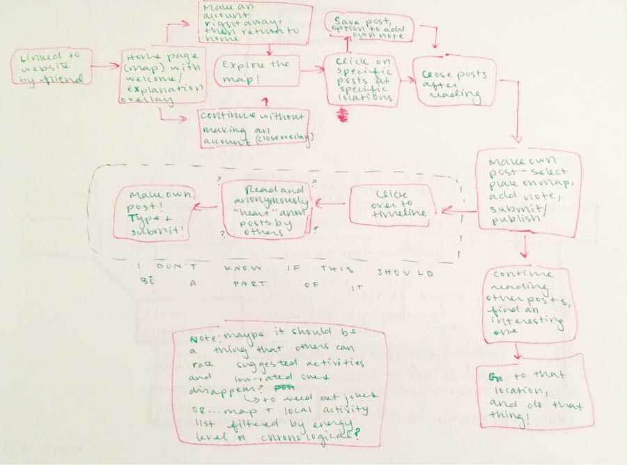

It's worth noting that my concept has changed after talking with my classmates on Tuesday!
The new concept is still based on the thought that successful self-care and successful treatments must be personalized and are not one-size-fits-all, and it even still has the same target audience. It is as follows: a location-based self-care & treatment recommendation and advice-sharing social media app or website. Users interact with a map to mark locations with valuable resources or ideal spots for certain kinds of self-care to be practiced, and share said lcoations (if they wish - they can also just save the information for their own future reference). Within a given community, they can also share their own self-care or treatment techniques, both celebrating the diversity of techniques and sharing advice to others who may be looking to try new kinds of self-care or treatment!
Still working things out here!
